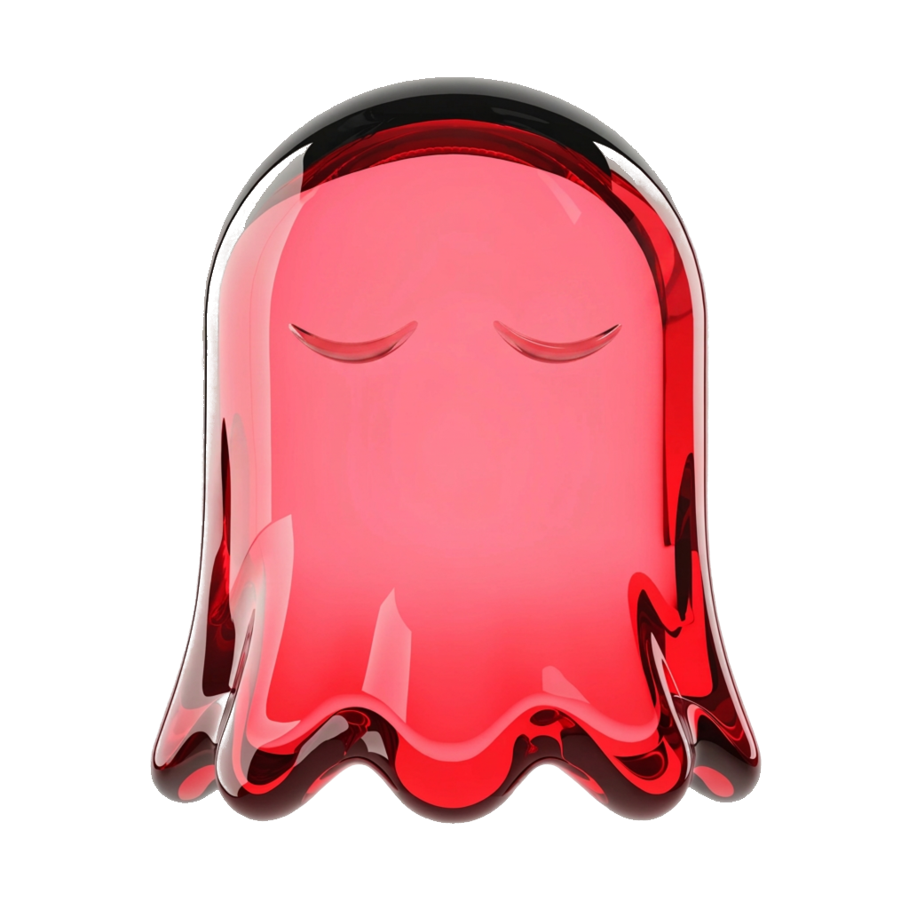
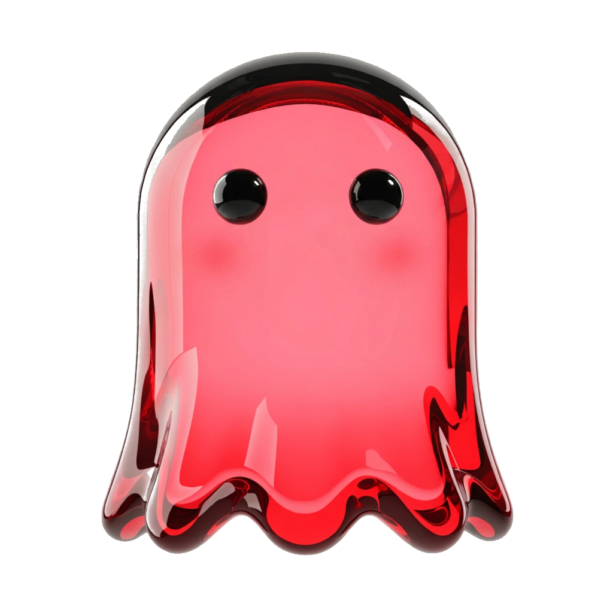

자개 액자 캐러셀 — 예시 7장
유호님 아이디어(08-14) 「캐러셀 첫 시작이나 마지막을 자개로」를 실물로 세운 것입니다. 자개는 바탕이 아니라 나전(인레이)으로 들어가고, 표지와 마감 두 장에만 씁니다 — 가운데 다섯 장은 마스코트가 맡습니다.
왜 표지·마감에만 자개인가. 자개는 조각마다 색이 터지는 압도적 크래프트라, 마스코트(반투명 광택 오브)와
한 화면에 두면 둘이 서로 잡아먹습니다. 그래서 자개 카드에는 마스코트가 없고, 마스코트 카드에는 자개가 없습니다.
표지에서는 문양이 아래에서 올라오고 마감에서는 위에서 내려와 — 일곱 장이 하나의 액자가 됩니다.
발행 전 남은 것 — 몽골어 병기가 비어 있습니다(의도).
「괜찮아요」는 상황마다 몽골어 대응 낱말이 갈려서 지어 넣으면 뜻이 새어 나갑니다. 말가이 검수에서 채웁니다.
1
괜찮아요
괜찮아요
다섯 뜻
같은 말인데 뜻이 다섯 개예요.
어느 쪽인지 알면 대화가 훨씬 편해져요.
SYNK< 한국어, 게임처럼
2

네, 좋아요
"커피 마실래요?" — 괜찮아요!
웃으면서 말하면 받아들이는 뜻이에요.
SYNK<
3

안 주셔도 돼요
똑같은 말인데 고개를 살짝 저으면
정중히 사양하는 뜻이 돼요.
SYNK<
4

걱정 마세요
친구가 미안해할 때 괜찮아요
—
마음 쓰지 말라고 다독이는 말이에요.
SYNK<
5

어디 아파요?
끝을 올려서 괜찮아요?
하면
몸이 어떤지 묻는 말이 돼요.
SYNK<
6
마음에 들어요
"이 옷 어때요?" — 괜찮네요!
이때는 좋다는 칭찬이에요.
SYNK<
7
오늘 한 번
받기 · 사양 · 다독임 · 안부 · 칭찬.
다섯 중 하나만 골라 오늘 써 봐요.
SYNK< 저장해 두고 꺼내 보세요